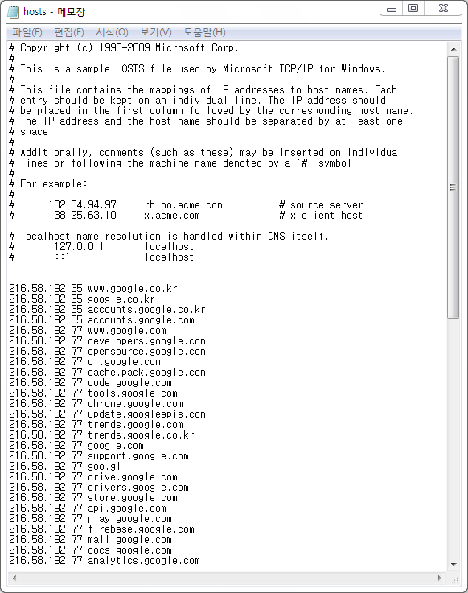
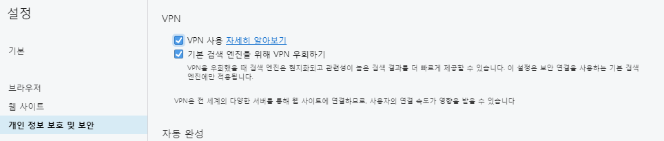
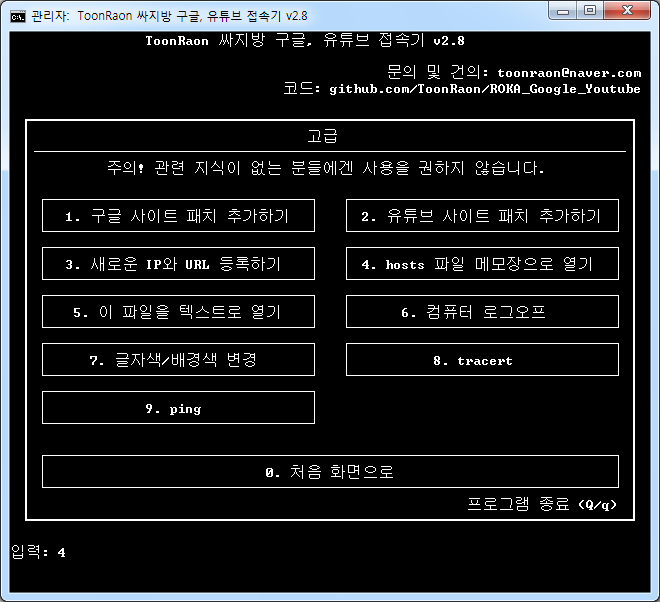
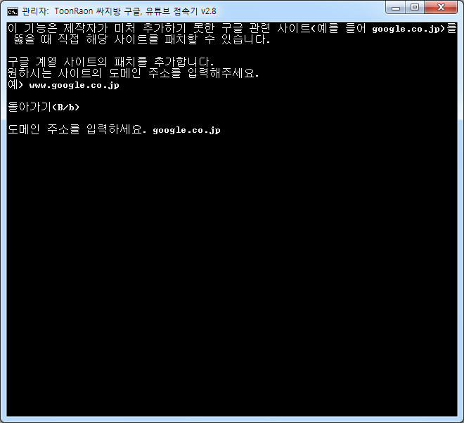

Q. 싸지방에서는 왜 구글과 유튜브에 접속이 안 될까요?
"국방부에서 일부러 막았다"라고 생각하시는 분들이 있습니다.
실제로는 국방부에서 일부러 막았다기보다는
그냥 각 부대에 설치된 라우터가 굉장히 후져서 그렇다고 보는 것이 타당합니다.
싸지방 컴퓨터에서 명령 프롬프트를 켜고
ping google.com 명령어를 입력하면 172.xxx.xxx.xxx로 시작되는 IP에 핑을 날리는데
이 172.xxx.xxx.xxx IP가 대부분의 육군 부대 라우터에서는 접속이 안 됩니다.
Q. 접속기들은 어떤 원리로 구글, 유튜브에 접속가능케 하는 건가요?
구글은 워낙 거대한 사이트이기 때문에 세계 각지에 서버를 여러 대 설치합니다.
유저가 google.com이라고 똑같이 입력하더라도
지역에 따라서 전혀 다른 IP에 접속하게 됩니다.
물론 보이는 화면은 모두 같은 페이지죠.
구글이 가진 여러가지 IP 중 군 부대에서도 접속 가능한 아이피가 있는데
접속기는 hosts 파일을 수정하여 유저가 google.com 같은 도메인으로 접속하려 할 때
접속 가능한 IP로 연결해주는 역할을 합니다.

접속기 실행 후 hosts 파일을 열어본 모습. 여러가지 IP와 도메인들이 추가되어있다.
Q. 이거 사용하다 걸리면 헌병대에 잡혀가나요?
안 잡혀갑니다.
첫 번째로, 아까 전에도 설명했듯이 국방부에서 일부러 접속을 막은 게 아니라
그냥 라우터가 안 좋아서 접속이 안 되는 겁니다.
국방부에서 구글과 유튜브를 막을 이유가 없습니다.
'사이버 지식 정보방'의 개설 목적은 두 가지입니다.
1. 용사들이 인터넷을 통해 공부할 수 있게 하기 위해서
2. 용사들의 문화적 단절 해소를 위해서
구글과 유튜브는 이 두 가지 목적에 정확히 부합됩니다.
두 번째로, hosts 파일을 수정하는 것은 마이크로소프트에서 정식으로 지원하는 기능입니다.
간혹 접속기를 사용하다보면 알약에서 호스트 파일을 변조했다면서 경고를 하는데 바이러스가 아닙니다.
hosts 파일을 변조해서 네이버에 접속하려는 걸 가로채서
피싱 사이트로 연결한다든가 하는 범죄 유형이 존재하기 때문에
그걸 막기 위해 알약에서 경고하는 것인데
ToonRaon 싸지방 접속기의 경우 모든 소스 코드가 공개되어 있기 때문에 그런 짓 못합니다.
잡혀가도 제가 먼저 잡혀가겠죠. 근데 반 년째 멀쩡히 잘 쓰고 있습니다.
Q. 구글, 유튜브 말고 제가 접속하고 싶은 사이트가 있는데 안 들어가져요. 뚫을 수 있는 방법이 없나요?
그 사이트가 구글, 네이버 정도로 거대한 사이트가 아니라면 불가능합니다.
서버 증설은 구축 비용 뿐만 아니라 유지 비용도 엄청 들어가기 때문에
어지간한 중소기업에서는 여러 IP를 만들어 놓지 않습니다.
게다가 여러 IP를 가지고 있다고 해봤자 비슷한 대역의 IP를 2~3개 정도 가지고 있는 거라서
다른 IP로 접속해도 안 되는건 매한가지 입니다.
유일한 해결 방법은 VPN을 사용하는 겁니다.
오페라 브라우저는 기본적으로 VPN 기능을 내장하고 있습니다.
1. 오페라를 실행한 후 설정(단축키 Alt + P)에 들어간다.
2. 개인 정보 보호 및 보안 탭에 들어간 후 VPN 사용을 체크한다.

3. 주소창에 VPN 버튼이 파란색으로 활성화 되었는지 확인하고 이제 마음껏 웹서핑 한다.

근데 솔직히 이 방법이 합법적인지는 모르겠네요. 정말 필요한 사이트가 아니라면 VPN은 쓰지 맙시다.
참고로 오페라 자체 VPN은 굉장히 느린 편입니다. VPN 켜놓고 유튜브에서 1080p 60fps짜리 영상 보긴 힘들 거예요.
Q. 구글쪽 사이트인데 접속기로도 접속이 안 되요.
구글에서 만든 사이트가 상당히 많습니다.
대표적으로 유튜브가 있고, Blogger, 안드로이드 API 같은 것도 구글이며
유튜브 뮤직, 유튜브 키드, 구글 폰트, 구글 애널리틱스 등 파생 사이트는 셀 수 없을 정도죠.
그래서 구글 관련 사이트임에도 제가 접속기에 입력을 못한 사이트가 많습니다.
이런 경우를 위해서 패치를 여러분들이 직접 추가할 수 있도록 접속기에 기능을 구현해놓았습니다.

접속기를 실행 한 후 0을 입력하고 Enter를 누르면 '고급'창으로 이동합니다.
여기서 1번을 입력합니다. (유튜브 관련 사이트라도 2번이 아니라 1번으로 패치하셔도 무방합니다.)

원하는 주소를 입력한 후 Enter를 누릅니다.
끝!
워낙 자주 사용하는 사이트라 매번 이런식으로 패치를 하기가 귀찮은 경우엔
toonraon@naver.com으로 이메일 주시면 반영하겠습니다.
Q. 언제까지 업데이트하시나요?
제가 2018년 10월에 전역합니다.
전역하고 나서는 아무래도 제가 스스로 업데이트를 하긴 힘들 것 같습니다.
밖에서는 뭐가 안 되고 뭐가 되는지 모르니까요.
관련 지식이 있으신 분들이 Github Pull Request를 이용해서 소스 수정 건의를 해주시거나
제 메일 toonraon@naver.com으로 연락주시면 최대한 계속해서 업데이트 하겠습니다.